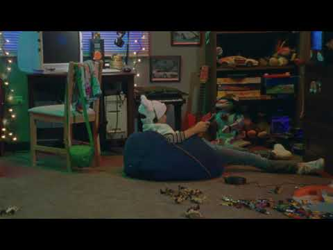

TIPOS DE ESTILOS DE APRENDIZAJE
VISUAL:
Es un estilo relacionado con ver y leer. Los alumnos visuales:
– Prefieren leer a escuchar y captan grandes cantidades de información solo mirando, piensan en imágenes, y visualizan en detalle.
– Tienen más facilidad para recordar grandes cantidades de información con rapidez. Además, visualizar les ayuda a crear relaciones entre diferentes ideas y conceptos.
– Suelen responder mejor a exámenes escritos.
AUDITIVO:
Este estilo está relacionado con hablar y escuchar, sirviendo para unir ideas o elaborar conceptos abstractos con la misma destreza y rapidez que el sistema visual. Los alumnos auditivos:
– Prefieren escuchar que leer. Si tienen que leer, les gusta hacerlo en alto.
– Aprenden mediante explicaciones orales y muestran más destreza para aprender idiomas y música.
– Se graban para estudiar y escuchan sus grabaciones, repasando los apuntes en voz alta y hablando consigo mismos.

KINESTÉSICO:
Este estilo está relacionado con tocar y hacer. El aprendizaje suele ser más lento que cualquiera de los otros dos y se necesita más tiempo.
– Captan información a través de sensaciones y movimientos, suelen hacer dibujos o esquemas en vez de copiar al pie de la letra los apuntes.
– Estudian moviéndose y haciendo pausas frecuentes, también les gusta estudiar en grupo.
– Relacionan los nuevos conocimientos con los que ya tenían y con la vida real.